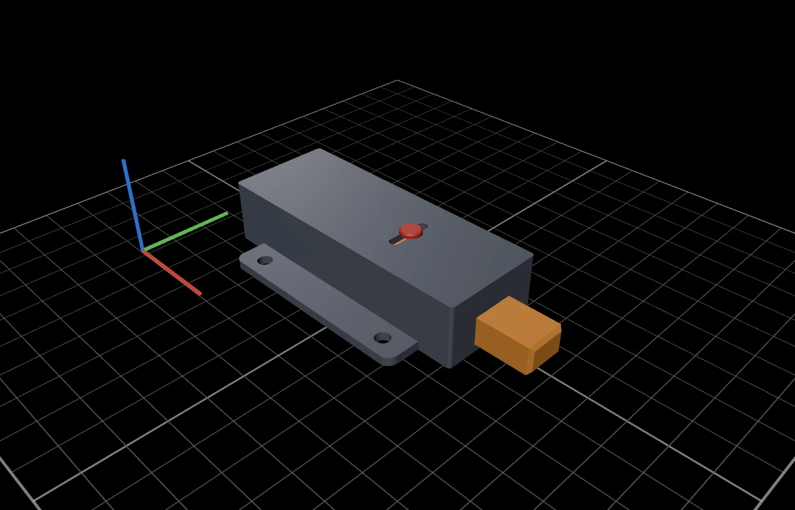
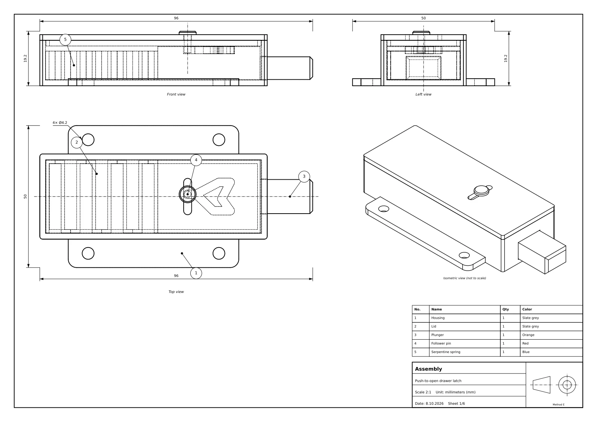
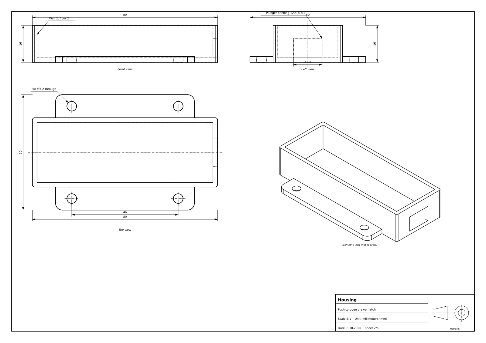
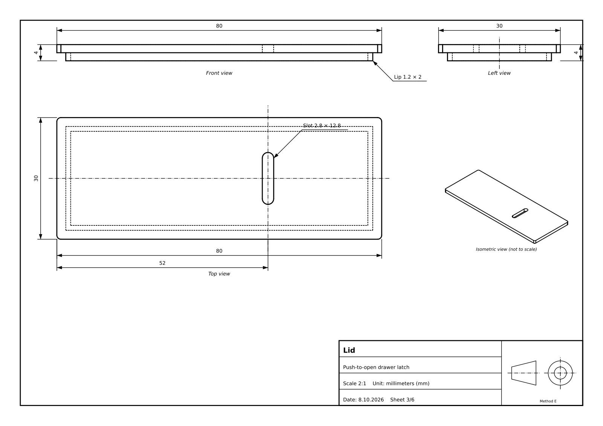
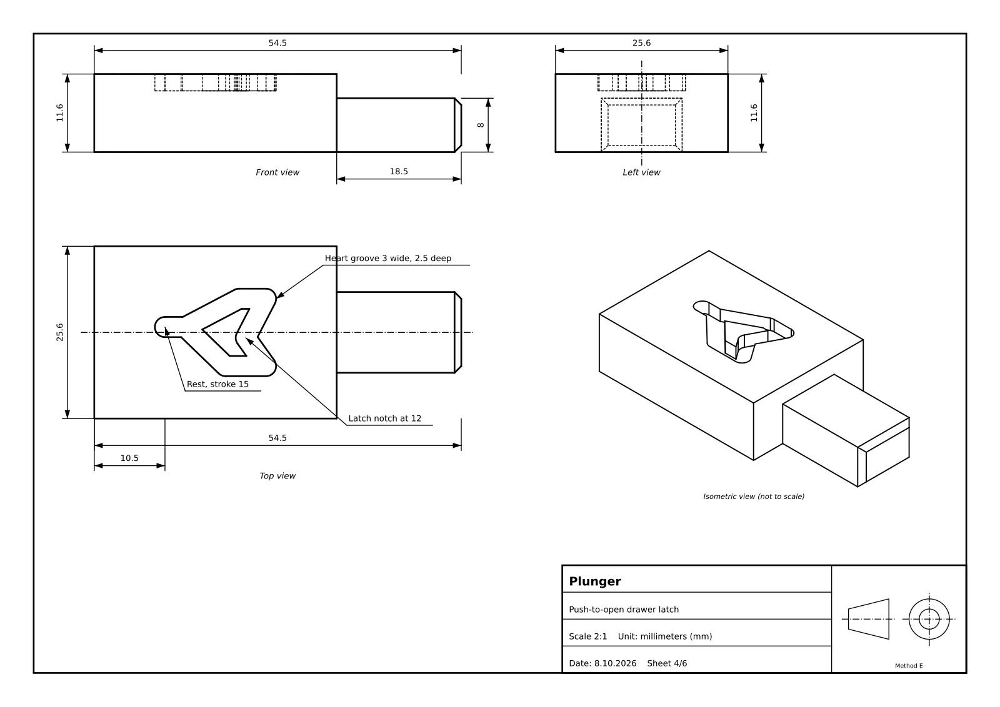
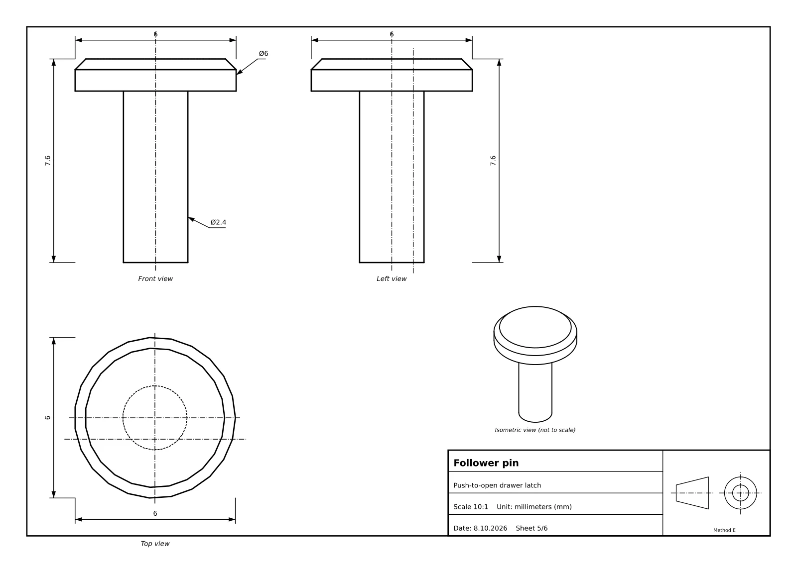
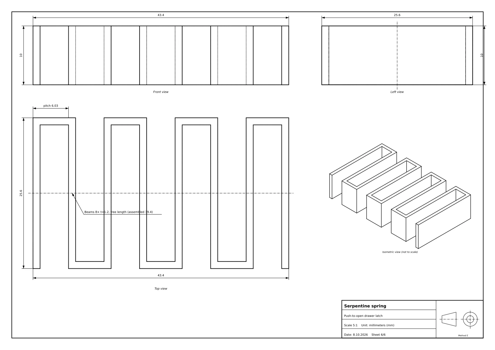
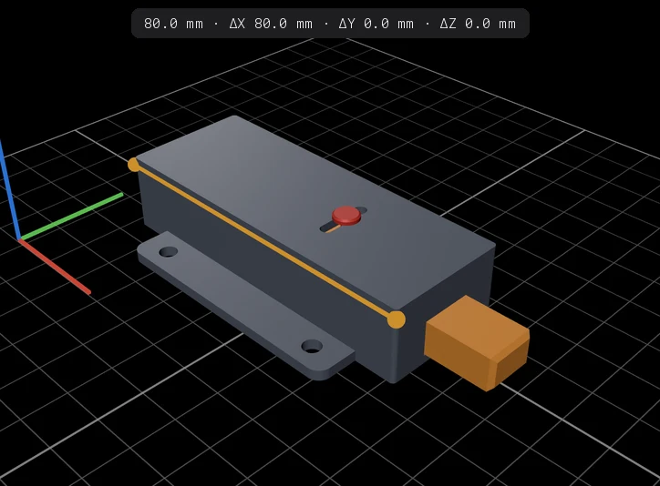
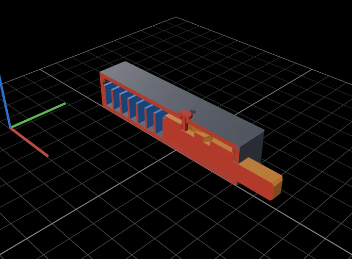

CAD Studio
Describe a part. Print it.
Parametric CAD, written and run by the coding agent on your Mac.

This push-to-open latch was made in CAD Studio from one prompt.
You type
A fully 3D-printed push-to-open latch for a drawer, about 80 mm long. A heart-shaped cam, a printed spring, four colors. Animate a full cycle.
9 minutes later, it clicks. Simulated, collision-checked, ready to print.
Watch it take shape.
Then hold the result.
Every step streams into the chat as it happens: the code being written, the model being built, the drawing being checked. The 3D view, the parameters and the technical drawing land the moment the files do.
A fully 3D-printed push-to-open latch for a drawer, about 80 mm long: a housing with a lid, a plunger with a heart-shaped cam groove, a follower pin and a printed serpentine spring. Give it four colors so each part stands out. Animate a full cycle: push to latch, push again and the spring pushes it back out.
Writing the model · 843 lines
Checking the drawing
Drawings are almost done; one callout still overlaps an edge, so I'm moving it.
Editing the model
I've built the latch. It's an 80 × 30 mm housing with screw flanges and a lid, a plunger with a heart-shaped cam groove that sticks out 18.5 mm, a sliding follower pin, and an 8-beam printed serpentine spring.
Simulated cycle: the first push goes in 15 mm and the plunger holds at 12 mm. The second push releases it and the spring returns it fully, with no collisions. Spring force runs from about 2.4 N at rest to about 11.3 N fully pushed.

One latch.
Five parts.
Laid flat, ready to print.
Assembled, exploded or laid out on your print bed. Hide a part, keep two together, open the plate in your slicer.
See it click
before you print it.
Ask for an animation and the agent simulates the mechanism: the spring, the cam and the push of your finger. The real solids are checked for collisions in every frame.
Rest
- Plunger travel
- 0.0mm
- Spring force
- 2.4N
- Finger force
- 0.0N
- Collisions
- 0of 189 frames
Drawings, sheet by sheet.
An ISO first-angle drawing comes with every model. The latch got six: the assembly with its parts list, then one sheet per part, all in a single PDF.





Measure it.
Cut it open.
Click two points for the distance and its X, Y and Z deltas. Slide a section plane along any axis to see inside, down to the cam groove and the spring.

